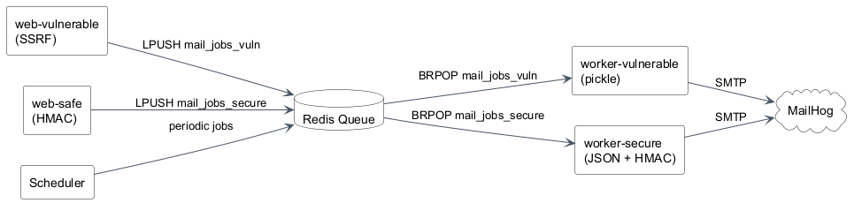
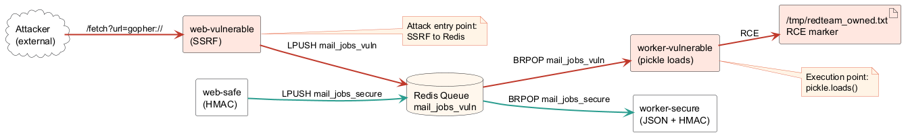
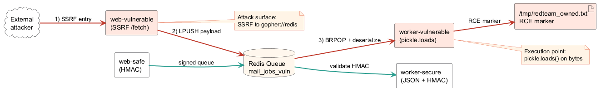
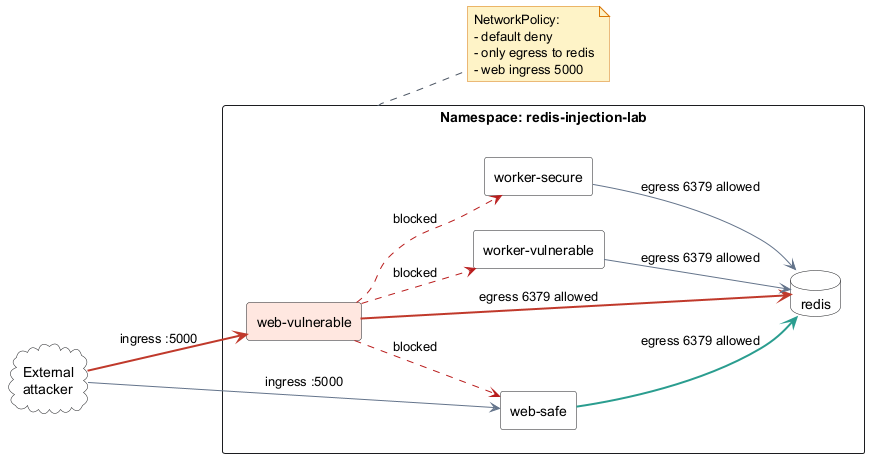
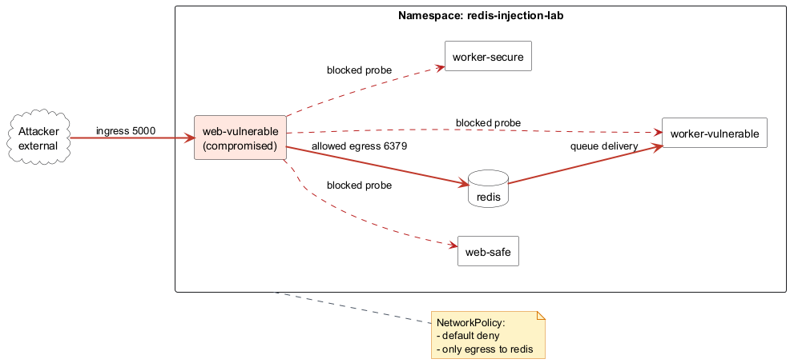

Red Team / Blue Team simulation on Minikube
April 28, 2026
Team member
Team member
Team member
Abuse SSRF to inject a payload into the Redis queue, then trigger pickle deserialization RCE in a vulnerable worker.
Replace unsafe serialization with JSON + HMAC, enforce UTF-8 validation, and apply NetworkPolicy to reduce blast radius.

Redis is the transport layer; execution happens in the consumer.
One idea per slide keeps the story crisp.
SSRF → Redis poisoning → pickle RCE




mail_jobs_vulnpickle.loads() on untrusted bytes
# Port-forward web-vulnerable
kubectl -n redis-injection-lab port-forward svc/web-vulnerable 5000:5000
# SSRF -> Redis poisoning
python scripts/red_team_attack.py --web-base-url http://127.0.0.1:5000 --redis-host redis --queue mail_jobs_vuln
# Verify marker
kubectl -n redis-injection-lab exec deploy/worker-vulnerable -- cat /tmp/redteam_owned.txt
Expected marker: REDTEAM_OWNED
[red-team] SSRF request status: 200
[red-team] Queue depth query status: 200
REDTEAM_OWNED
[x] Rejected malicious payload
[x] Accepted valid signed payload
MARKER_ABSENT
HMAC validation + safe parsing + NetworkPolicy
Accept only valid UTF-8 JSON and verify the signature before processing.
Remove pickle usage and log drop reasons (non-UTF8 / invalid JSON).
Restrict internal traffic and reduce blast radius when a pod is compromised.
Script: python scripts/blue_team_verify.py --mode k8s ...
Start Minikube, build images, apply manifests.
Red Team: SSRF → Redis poisoning → verify marker.
Blue Team: verify secure worker + NetworkPolicy.
Details: RUNBOOK_MINIKUBE.md
Redis is the delivery channel. The bug lives in the consumer that deserializes untrusted data.
JSON + HMAC + NetworkPolicy reduces RCE risk and limits lateral movement.
Q&A